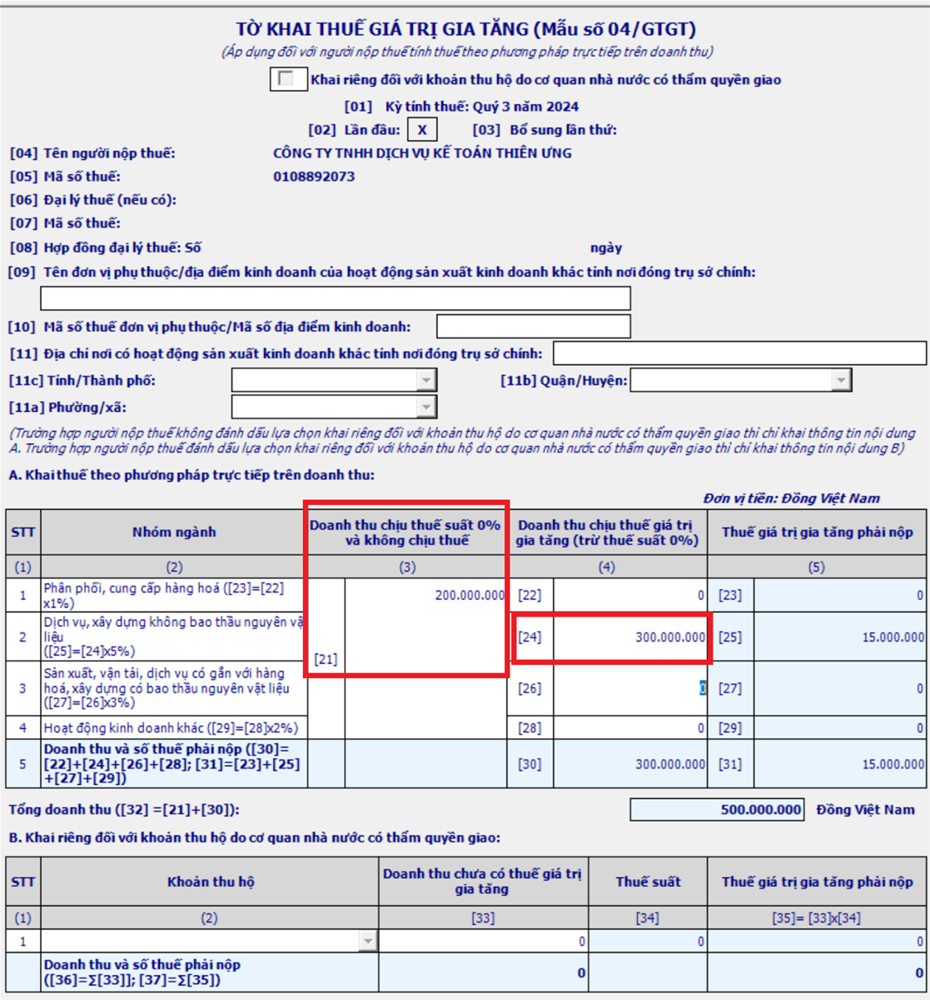

Hướng dẫn cách kê khai thuế GTGT theo phương pháp trực tiếp trên doanh thu và trực tiếp trên GTGT: Điều kiện kê khai thuế theo phương pháp trực tiếp. Tờ khai thuế GTGT theo pp trực tiếp. Cách tính thuế GTGT trực tiếp trên doanh thu.
1. Cách kê khai thuế GTGT theo phương pháp trực tiếp trên doanh thu:
Theo khoản 2 điều 13 Thông tư 219/2013/TT-BTC quy định:
a) Đối tượng kê khai thuế GTGT trực tiếp trên doanh thu:
- Doanh nghiệp, hợp tác xã đang hoạt động có doanh thu hàng năm dưới mức ngưỡng doanh thu 1 tỷ đồng (trừ trường hợp đăng ký tự nguyện áp dụng phương pháp khấu trừ)
- Doanh nghiệp, hợp tác xã mới thành lập (trừ trường hợp đăng ký tự nguyện áp dụng phương pháp khấu trừ)
- Hộ, cá nhân kinh doanh;
- Tổ chức, cá nhân nước ngoài kinh doanh tại Việt Nam không theo Luật Đầu tư và các tổ chức khác không thực hiện hoặc thực hiện không đầy đủ chế độ kế toán, hóa đơn, chứng từ theo quy định của pháp luật (trừ các tổ chức, cá nhân nước ngoài cung cấp hàng hóa, dịch vụ để tiến hành hoạt động tìm kiếm, thăm dò, phát triển và khai thác dầu khí).
- Tổ chức kinh tế khác không phải là doanh nghiệp, hợp tác xã (trừ trường hợp đăng ký nộp thuế theo phương pháp khấu trừ)"
|
Các trường hợp đăng ký tự nguyện áp dụng phương pháp khấu trừ gồm: Khoản 3 Điều 3 Thông tư 119/2014/TT-BTC quy định: "3. Cơ sở kinh doanh đăng ký tự nguyện áp dụng phương pháp khấu trừ thuế, bao gồm: a) Doanh nghiệp, hợp tác xã đang hoạt động có doanh thu hàng năm từ bán hàng hóa, cung ứng dịch vụ chịu thuế GTGT dưới một tỷ đồng đã thực hiện đầy đủ chế độ kế toán, sổ sách, hóa đơn, chứng từ theo quy định của pháp luật về kế toán, hóa đơn, chứng từ b) Doanh nghiệp mới thành lập từ dự án đầu tư của cơ sở kinh doanh đang hoạt động nộp thuế GTGT theo phương pháp khấu trừ. c) Doanh nghiệp, hợp tác xã mới thành lập có thực hiện đầu tư, mua sắm, nhận góp vốn bằng tài sản cố định, máy móc, thiết bị, công cụ, dụng cụ hoặc có hợp đồng thuê địa điểm kinh doanh. d) Tổ chức nước ngoài, cá nhân nước ngoài kinh doanh tại Việt Nam theo hợp đồng nhà thầu, hợp đồng nhà thầu phụ. đ) Tổ chức kinh tế khác hạch toán được thuế GTGT đầu vào, đầu ra không bao gồm doanh nghiệp, hợp tác xã."
--------------------------------------------------------------------------------
+) Hồ sơ đăng ký kê khai thuế GTGT theo pp trực tiếp hoặc khấu trừ: Theo Khoản 1 Điều 1 Thông tư 93/2017/TT-BTC quy định: "Phương pháp tính thuế của cơ sở kinh doanh xác định theo Hồ sơ khai thuế GTGT hướng dẫn tại Điều 11 Thông tư số 156/2013/TT-BTC ngày 06/11/2013 của Bộ Tài chính (đã được sửa đổi, bổ sung tại Điều 1 Thông tư số 119/2014/TT-BTC ngày 25/8/2014 và Điều 2 Thông tư số 26/2015/TT-BTC ngày 27/2/2015 của Bộ Tài chính)." |
----------------------------------------------------------------------
Như vậy:- Việc xác định phương pháp tính thuế GTGT theo phương pháp Khấu trừ hay trực tiếp sẽ căn cứ theo Hồ sơ khai thuế GTGT do cơ sở kinh doanh gửi đến cơ quan thuế, cụ thể như sau:
- Nếu Doanh nghiệp lựa chọn đăng ký áp dụng thuế GTGT theo phương pháp khấu trừ thì gửi Tờ khai thuế GTGT Mẫu số 01/GTGT, 02/GTGT đến cơ quan thuế.
- Nếu Doanh nghiệp lựa chọn đăng ký áp dụng theo phương pháp trực tiếp thì gửi Tờ khai thuế GTGT Mẫu số 03/GTGT, 04/GTGT đến cơ quan thuế.
(Theo Công văn 4253/TCT-CS ngày 20/9/2017 của Tổng cục thuế)
Thời hạn nộp hồ sơ là Thời hạn nộp Tờ khai thuế GTGT kỳ đầu tiên năm thành lập hoặc đầu năm dương lịch.
Ví dụ: Công ty tư vấn Minh Phúc thành lập ngày 19/2/2024. Công ty lựa chọn kê khai thuế GTGT theo phương pháp trực tiếp.
-> Thì công ty phải nộp Tờ khai thuế GTGT mẫu 04/GTGT quý 1/2024 (quý đầu tiên) chậm nhất ngày 02/05/2024 (Vì ngày 30/04 và 01/05 là ngày nghỉ lễ nên được chuyển sang ngày làm việc tiếp theo)
Thời gian áp dụng ổn định phương pháp kê khai thuế là 2 năm liên tục.
Ví dụ: Công ty mới thành lập vào tháng 3 năm 2024 và đã gửi tờ khai mẫu 01/GTGT tới cơ quan thuế quản lý theo quy định và đã được cơ quan thuế Thông báo chấp thuận nội dung đăng ký thì Công ty áp dụng tính thuế GTGT theo phương pháp khấu trừ cho năm 2024.
- Đến hết năm 2024 (năm dương lịch đầu tiên từ khi thành lập), Công ty thực hiện xác định lại tổng doanh thu của hàng hóa, dịch vụ bán ra chịu thuế GTGT năm 2024 theo hướng dẫn tại Khoản 2 Điều 12 Thông tư số 219/2013/TT-BTC:
* Trường hợp doanh thu theo cách xác định nêu trên từ 1 tỷ đồng trở lên thì Công ty tiếp tục áp dụng phương pháp khấu trừ thuế ổn định trong 02 năm tiếp theo (năm 2025, 2026).
* Trường hợp doanh thu theo cách xác định nêu trên dưới 1 tỷ đồng và không tiếp tục đăng ký tự nguyện áp dụng phương pháp khấu trừ thuế thì Công ty gửi tờ khai mẫu 04/GTGT đăng ký áp dụng phương pháp trực tiếp đến cơ quan thuế quản lý.
Lưu ý: Nếu DN đang kê khai theo pp trực tiếp nhưng có doanh thu hàng năm từ 1 tỷ trở lên phải kê khai theo pp khấu trừ (không được theo pp trực tiếp) -> Vì theo quy định bên trên doanh thu hàng năm phải dưới ngưỡng 1 tỷ mới được kê khai trực tiếp.
------------------------------------------------------------------------------------------
b. Hồ sơ khai thuế GTGT theo pp trực tiếp trên doanh thu:
- Tờ khai thuế giá trị gia tăng mẫu số 04/GTGT.
--------------------------------------------------------------------------------------------
c) Công thức tính thuế GTGT theo phương pháp trực tiếp:| Số thuế GTGT phải nộp | = | Doanh thu | X | Tỷ lệ % |
+) Cách xác định Doanh thu để tính thuế GTGT:
- Doanh thu để tính thuế GTGT là: Tổng số tiền bán hàng hóa, dịch vụ thực tế ghi trên hóa đơn bán hàng đối với hàng hóa, dịch vụ chịu thuế GTGT bao gồm các khoản phụ thu, phí thu thêm mà cơ sở kinh doanh được hưởng.
+) Tỷ lệ % để tính thuế GTGT trên doanh thu như sau:
- Phân phối, cung cấp hàng hóa: 1%;
- Dịch vụ, xây dựng không bao thầu nguyên vật liệu: 5%;
- Sản xuất, vận tải, dịch vụ có gắn với hàng hóa, xây dựng có bao thầu nguyên vật liệu: 3%;
- Hoạt động kinh doanh khác: 2%.
Chi tiết thuế suất thuế GTGT theo phương pháp trực tiếp xem tại đây:
- Phân phối, cung cấp hàng hóa: 1%;
- Dịch vụ, xây dựng không bao thầu nguyên vật liệu: 5%;
- Sản xuất, vận tải, dịch vụ có gắn với hàng hóa, xây dựng có bao thầu nguyên vật liệu: 3%;
- Hoạt động kinh doanh khác: 2%.
Chi tiết thuế suất thuế GTGT theo phương pháp trực tiếp xem tại đây:
-----------------------------------------------------------------------
Ví dụ: Công ty Kế toán Diệu Tâm là doanh nghiệp kê khai, nộp thuế GTGT theo phương pháp trực tiếp. Trong quý 3/2024 có doanh thu phát sinh như sau:
- Doanh thu từ hoạt động đào tạo kế toán là 200.000.000đ
- Doanh thu từ dịch vụ kế toán thuế là 300.000.000đ
=> Thì kê khai như sau:
-> Công ty không phải nộp thuế GTGT theo tỷ lệ (%) trên doanh thu từ hoạt động bán phần mềm máy tính = 200.000.000 (do "Đào tạo" thuộc đối tượng không chịu thuế GTGT)
-> Phải kê khai, nộp thuế GTGT theo tỷ lệ 5% trên doanh thu từ dịch vụ kế toán thuế = 300.000.000 x 5%
=> Cách lập Tờ khai 04/GTGT trực tiếp trên doanh thu như sau:
- Kê khai vào Chỉ tiêu 21: 200.000.000
- Kê khai vào Chỉ tiêu 24: 300.000.000

------------------------------------------------------------------------------------------
- Nếu DN nhiều ngành nghề có mức tỷ lệ khác nhau phải khai thuế GTGT theo từng nhóm ngành nghề tương ứng với các mức tỷ lệ theo quy định;
=> Trường hợp không xác định được doanh thu theo từng nhóm ngành nghề hoặc trong một hợp đồng kinh doanh trọn gói bao gồm các hoạt động tại nhiều nhóm tỷ lệ khác nhau mà không tách được thì sẽ áp dụng mức tỷ lệ cao nhất của nhóm ngành nghề mà cơ sở sản xuất, kinh doanh.
=> Trường hợp không xác định được doanh thu theo từng nhóm ngành nghề hoặc trong một hợp đồng kinh doanh trọn gói bao gồm các hoạt động tại nhiều nhóm tỷ lệ khác nhau mà không tách được thì sẽ áp dụng mức tỷ lệ cao nhất của nhóm ngành nghề mà cơ sở sản xuất, kinh doanh.
----------------------------------------------------------------------
2. Cách kê khai thuế GTGT theo phương pháp trực tiếp trên GTGT
a. Đối tượng áp dụng:
- Trường hợp DN có hoạt động mua, bán, chế tác vàng, bạc, đá quý thì DN phải hạch toán riêng hoạt động này để nộp thuế theo phương pháp tính trực tiếp trên giá trị gia tăng.
b. Cách tính thuế GTGT phải nộp:
| Số thuế GTGT phải nộp | = | Giá trị gia tăng | X | 10% |
+) Giá trị gia tăng của vàng, bạc, đá quý = Giá thanh toán của vàng, bạc, đá quý bán ra trừ (-) giá thanh toán của vàng, bạc, đá quý mua vào tương ứng.
Giá thanh toán của vàng, bạc, đá quý bán ra là: Giá thực tế bán ghi trên hóa đơn bán vàng, bạc, đá quý, bao gồm cả tiền công chế tác (nếu có), thuế GTGT và các khoản phụ thu, phí thu thêm mà bên bán được hưởng.
Giá thanh toán của vàng, bạc, đá quý mua vào: = Giá trị vàng, bạc, đá quý mua vào hoặc nhập khẩu, đã có thuế GTGT dùng cho mua bán, chế tác vàng, bạc, đá quý bán ra tương ứng.
- Trường hợp trong kỳ tính thuế phát sinh giá trị gia tăng âm (-) của vàng, bạc, đá quý thì được tính bù trừ vào giá trị gia tăng dương (+) của vàng, bạc, đá quý.
- Trường hợp không có phát sinh giá trị gia tăng dương (+) hoặc giá trị gia tăng dương (+) không đủ bù trừ giá trị gia tăng âm (-) thì được kết chuyển để trừ vào giá trị gia tăng của kỳ sau trong năm.
- Kết thúc năm dương lịch, giá trị gia tăng âm (-) không được kết chuyển tiếp sang năm sau.
c. Hồ sơ khai thuế GTGT theo pp trực tiếp trên GTGT:
- Tờ khai thuế giá trị gia tăng mẫu số 03/GTGT.
===================================================
3. Thời hạn nộp tờ khai thuế GTGT theo phương pháp trực tiếp:
Theo quy định tại Điều 44 Luật quản lý thuế 38/2019/QH14 ngày 13/6/2019
1) Hạn nộp tờ khai thuế GTGT theo tháng:
- Chậm nhất là ngày thứ 20 của tháng tiếp theo tháng phát sinh nghĩa vụ thuế đối với trường hợp khai và nộp theo tháng;
Ví dụ: Hạn nộp Tờ khai thuế GTGT tháng 2/2024 là ngày 20/3/2024
2) Hạn nộp tờ khai thuế GTGT theo quý:
- Chậm nhất là ngày cuối cùng của tháng đầu của quý tiếp theo quý phát sinh nghĩa vụ thuế đối với trường hợp khai và nộp theo quý.
Ví dụ: Hạn nộp Tờ khai thuế GTGT Qúy 1/2024 là ngày 02/05/2024 (Vì ngày 30/04 và 01/05 là ngày nghỉ lễ nên được chuyển sang ngày làm việc tiếp theo là ngày 02/05/2024)
Chú ý: Thời hạn nộp tờ khai cũng là thời hạn nộp tiền thuế (nếu có phát sinh nhé!)
Theo quy định tại Điều 44 Luật quản lý thuế 38/2019/QH14 ngày 13/6/2019
1) Hạn nộp tờ khai thuế GTGT theo tháng:
- Chậm nhất là ngày thứ 20 của tháng tiếp theo tháng phát sinh nghĩa vụ thuế đối với trường hợp khai và nộp theo tháng;
Ví dụ: Hạn nộp Tờ khai thuế GTGT tháng 2/2024 là ngày 20/3/2024
2) Hạn nộp tờ khai thuế GTGT theo quý:
- Chậm nhất là ngày cuối cùng của tháng đầu của quý tiếp theo quý phát sinh nghĩa vụ thuế đối với trường hợp khai và nộp theo quý.
Ví dụ: Hạn nộp Tờ khai thuế GTGT Qúy 1/2024 là ngày 02/05/2024 (Vì ngày 30/04 và 01/05 là ngày nghỉ lễ nên được chuyển sang ngày làm việc tiếp theo là ngày 02/05/2024)
Chú ý: Thời hạn nộp tờ khai cũng là thời hạn nộp tiền thuế (nếu có phát sinh nhé!)
----------------------------------------------------------------------
Chúc các bạn thành công!
Bạn muốn học kê khai thuế tháng/quý, xác định thuế GTGT được khấu trừ - không được khấu trừ, lập tờ khai báo cáo quyết toán thuế cuối năm...
có thể tham gia: Lớp học thực hành kế toán thuế thực tế chuyên sâu
Bạn muốn học kê khai thuế tháng/quý, xác định thuế GTGT được khấu trừ - không được khấu trừ, lập tờ khai báo cáo quyết toán thuế cuối năm...
có thể tham gia: Lớp học thực hành kế toán thuế thực tế chuyên sâu
-----------------------------------------------------------------------------